Ein Fluss am unteren
Rand deines Bildschirms
Es gibt einen Streifen auf deinem Bildschirm, den niemand nutzt. Das schmale Band über der Taskleiste, zwischen einer Tabelle und der nächsten.
Wir haben dort einen Fluss hingelegt. Ein kleines Boot, ein Angler mit Strohhut und die Schnur im Wasser. Und wenn dir der Streifen zu klein wird, nimmt der Fluss den ganzen Monitor ein: Er fließt als Hintergrundbild hinter deinen Desktop-Symbolen.
Während du arbeitest, angelt er. Wenn du wieder hinschaust, hat sich etwas verändert: Es hat geregnet, es ist Nacht geworden, ein Flussdelfin ist vorbeigezogen. Du musst nicht spielen. Schwer wird nur, nicht hinzusehen.
Steam-Seite · bald
Für alle, die sich gern treiben lassen
Er angelt für dich
Der Fisch beißt, wann er will. Wenn du da bist, macht ein Klick im richtigen Moment den Unterschied. Wenn nicht, auch gut — der Fluss nimmt es niemandem übel, der ins Meeting musste.
Vom Araguaia bis Noronha
Es beginnt an einem Fluss mit Sandbänken und Sonne im Gesicht. Dann kommen das schwarze Wasser des Rio Negro, die Berge von Furnas, die Küste von Santa Catarina — und ganz am Ende ein Meer, in dem das, was anbeißt, größer sein kann als dein Boot.
Das Wetter hat das Sagen
Der Regen kommt langsam. Der Sturm schaukelt das Boot. Und in manchen Nächten wird der Mond rot — dann weiß nicht einmal der Fluss, was anbeißen wird.
Gesellschaft unterwegs
Ein Kaiman, der den Haken beäugt. Ein Riesenotter, der sich nur die dicken aussucht. Ein Flussdelfin, der dir den Schwarm zutreibt. Sie kommen, wann sie wollen — und wenn sie kommen, bleiben sie.
Der Fluss hat Launen


Der Hut, den du fängst, gehört dir. Wirklich.
Jeder Angler beginnt mit demselben Strohhut. Aber nicht lange.
Irgendwann, ohne Vorwarnung, fliegt ein Storch mit einem Sack über deinen Bildschirm. Er hält nicht an und wartet nicht. Du klickst — und was aus dem Sack fällt, bleibt nicht im Spiel stecken. Es landet direkt in deinem Steam-Inventar.
Ab da gehört der Hut dir. Zum Aufsetzen, zum Tauschen mit einem Freund oder zum Verkaufen auf dem Steam-Markt an jemanden, der noch auf seinen Storch wartet.
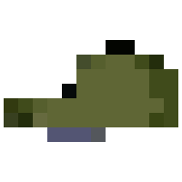
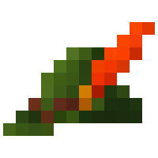
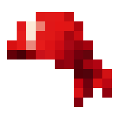
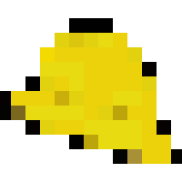
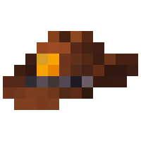
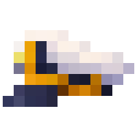
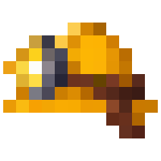
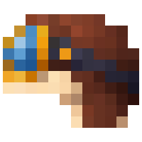
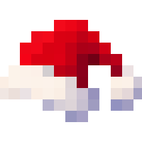
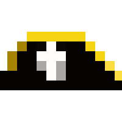
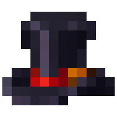
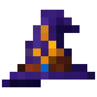
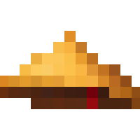
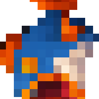
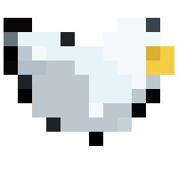
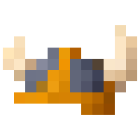
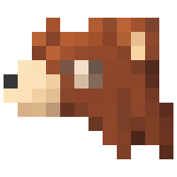
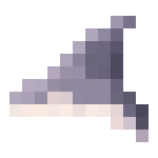
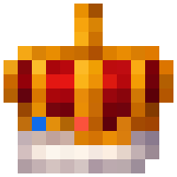
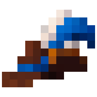
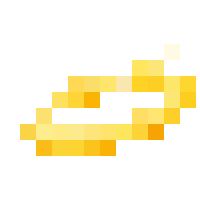
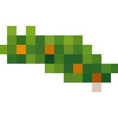
Den Strohhut hat jeder schon. Den Rest bringt nur der Storch.
Jeder Hut hat eine Geschichte
Nicht jeder Hut kommt gleich an. Manche kommen abgetragen, von zu viel Fluss. Andere getragen, die Krempe schon in der Form eines fremden Kopfes. Und ein paar — ganz wenige — kommen neu, als hätten sie nie Wasser gesehen.
Für Steam sind das verschiedene Items. Jedes mit seinem eigenen Wert auf dem Markt.
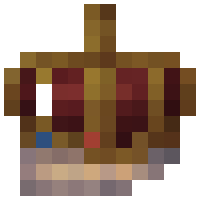
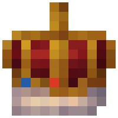
Und jetzt stell dir eine neue Kaiserkrone vor. Legendär ist schon die Spitze der Auslosung, und neu ist der seltenste Zustand. So ein Stück werden nur wenige besitzen — und wer eins hat, weiß ganz genau, was er da in der Hand hält.
Und nein, das ist kein Pay-to-win. Ein Hut gibt einen kleinen Schub, nie eine Abkürzung — der beste hilft weniger als das faulste Tier an Bord. Ein Hut soll selten, schön und deiner sein. Den Vorsprung verschafft dir die Zeit, in der deine Schnur im Wasser hängt.
Der Kleiderschrank
Die Hüte wohnen im Kleiderschrank, und dort nimmt die Sammlung Gestalt an. Was du hast, setzt du auf. Was dir noch fehlt, erscheint als ???, in der Farbe seiner Seltenheit und sonst nichts.
Du weißt, dass es ihn gibt. Nur nicht, welcher es ist.
Und Verkaufen löscht keine Geschichte: Ein Hut, der durch deine Hände gegangen ist, bleibt dort vermerkt, auch wenn er längst weg ist.
Zwei Hüte, die kein Storch bringt
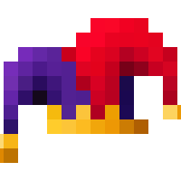
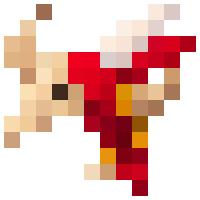
Die Narrenkappe und der Boi-bumbá fallen nicht vom Himmel, stecken in keinem Sack und stehen in keinem Laden. Sie können, was kein anderer Hut kann: der Köder, der nie verbraucht wird, der Fisch, der doppelt kommt.
Zu ihnen führt nur ein Weg: die monatliche Meisterschaft. Der Sieger bekommt den himmlischen Hut neu. Platz zwei bekommt ihn getragen, Platz drei abgetragen. Die erste Ausgabe gilt der Narrenkappe.
Wenn du so einen je auf dem Markt siehst, kannst du dir sicher sein: Jemand hat gewonnen.
Jeder Fisch hat sein eigenes Gesicht
Keiner wurde einfach umgefärbt, um als ein anderer durchzugehen. Der Mandi vom Ufer, die Piranha aus dem Überschwemmungswald, der Marlin vom offenen Meer — jeder hat seine eigene Zeichnung.
Und jeder Ort hütet ein Monster, das nicht auf jeden Köder steigt. Am Araguaia, heißt es, ist es eine hundertjährige Piraíba.

Vom Kanu bis aufs offene Meer
Alle beginnen in einem Kanu. Eines Tages wird der Laderaum zu klein, und aus dem Kanu wird ein Boot. Aus dem Boot ein Schnellboot. Und ehe du dich versiehst, bist du auf offener See, in einem Trawler, neben dem das Kanu wie ein Spielzeug aussieht.

Und am Fluss wohnen noch andere
Ein Kaiman am Ufer, ein Jaguar, der im Sand liegt, eine Schlange am Rand, ein Frosch auf der Riesenseerose, ein Ara am Himmel, ein Pelikan dicht über dem Meer. Sie bringen keine Punkte, keinen Bonus und wollen keinen Klick — sie ziehen vorbei, weil an Flüssen eben Tiere leben.
Und ab und zu treibt eine Katze auf einem Rettungsring vorbei, oder eine Quietscheente. Die können wir auch nicht erklären.

Woher dieser Fluss kommt
À Deriva ist nicht in einem großen Studio entstanden. Es ist in Brasilien entstanden, von einer einzigen Person gemacht, mit einer hartnäckigen Idee: Man kann einen Fluss in der Ecke des Bildschirms fließen lassen, ohne jemanden zu stören.
Die Orte kommen von zu Hause. Der Araguaia, der Rio Negro, Furnas, die Küste von Santa Catarina, das Meer vor Noronha — jeder mit seinem Fisch, seinem Köder und den Tieren, die wir seit der Kindheit kennen. Der Boi-bumbá wurde zum Hut. Die Pororoca wurde zum Wetter. Der Jabiru bekam einen Platz im Boot.
Bevor es hier ankam, ist das Spiel durch die Hände von Leuten gegangen, die gespielt, gemeckert und Vorschläge gemacht haben — und vieles hat sich deshalb verändert. Jetzt geht der Fluss auf Steam.
Was noch kommt noch nicht
Pirate's Pack
Jeder Fluss hat eine Geschichte, die niemand bestätigen kann.
Diese beginnt in einer mondlosen Nacht. Ein dunkler Rumpf gleitet lautlos durch den Nebel. Niemand an Deck, niemand am Ruder — nur zerrissene Segel, gebläht von einem Wind, der gar nicht weht, und ein Papagei mit Kopftuch, der vom Mast ins Nichts krächzt.
Es ist der Fliegende Holländer. Verflucht, und kein bisschen reumütig.
Der Kapitän ist längst verschwunden. Der Papagei nicht. Er sucht ein neues Boot, das er sein Zuhause nennen kann — und hat das Einzige mitgebracht, was von seinem alten Herrn übrig ist: den Piraten-Dreispitz, heil, genau so, wie er aus der Truhe kam. Einen Dreispitz findet man auf diesen Flüssen schon mal, vom Wasser abgetragen. Neu gibt es nur diesen.
Das Pirate's Pack ist die Gründer-Edition: das Geisterschiff, der Papagei und der neue Dreispitz. Für alle, die von Tag eins an Teil dieser Geschichte sein wollen — und den Beweis im Inventar behalten.
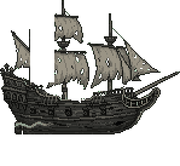
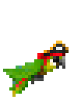

Der Fluss geht auf Steam
Die Seite wird gerade gebaut. Wenn sie online geht, leuchtet dieser Knopf auf.
Steam-Seite · bald
Setz das Spiel an dem Tag auf deine Wunschliste — so merkt Steam, dass Leute warten, und zeigt es mehr Menschen. Bis dahin: Erzähl es jemandem, der den ganzen Tag vor dem Computer sitzt. Du kennst mindestens einen.